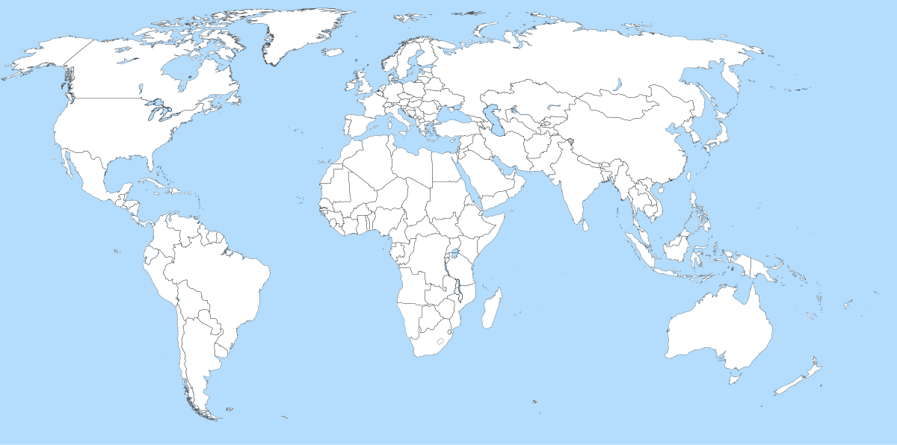
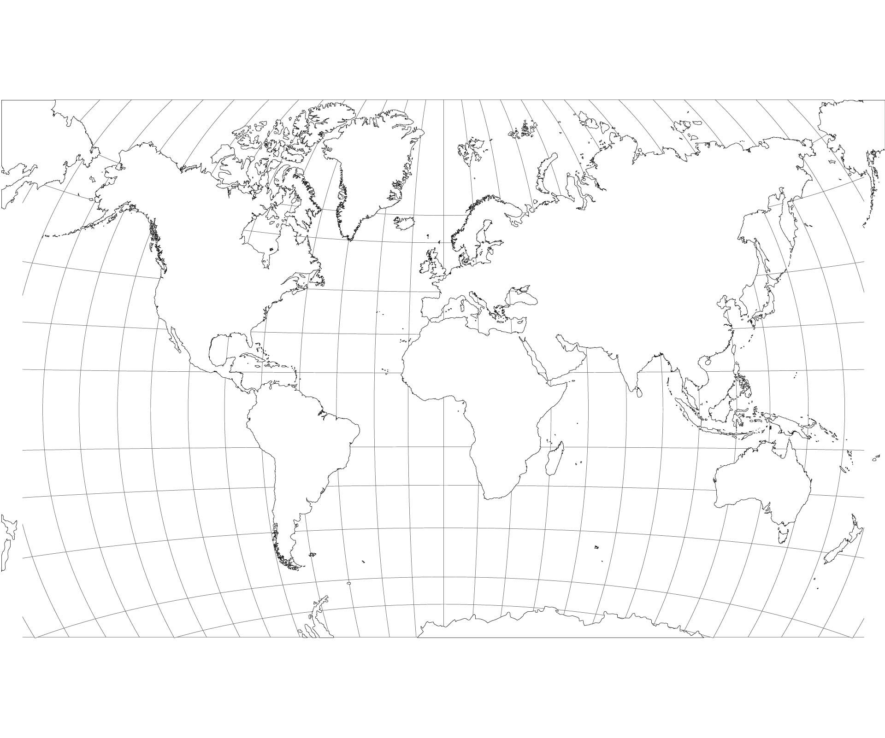
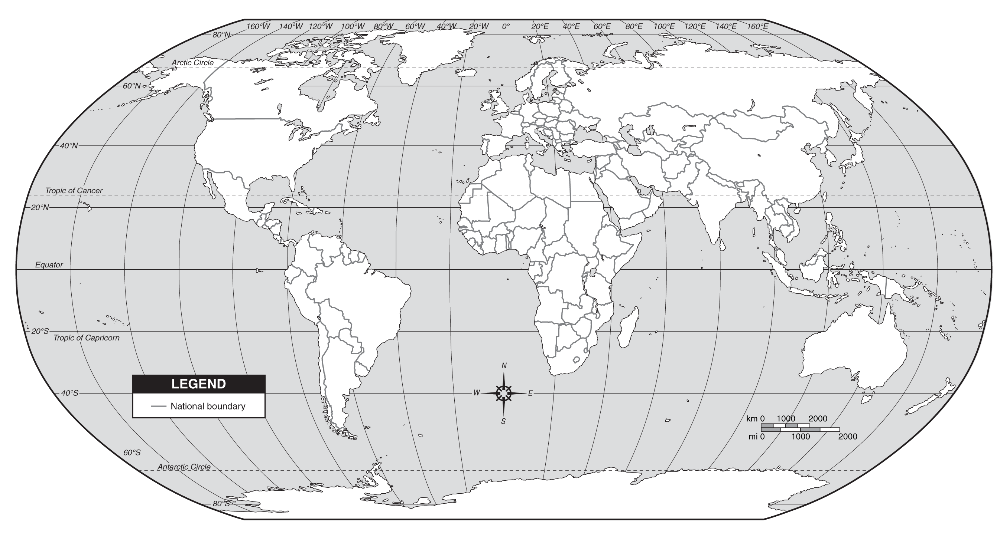
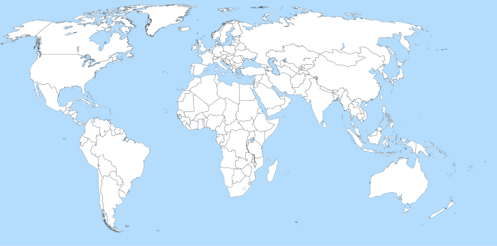
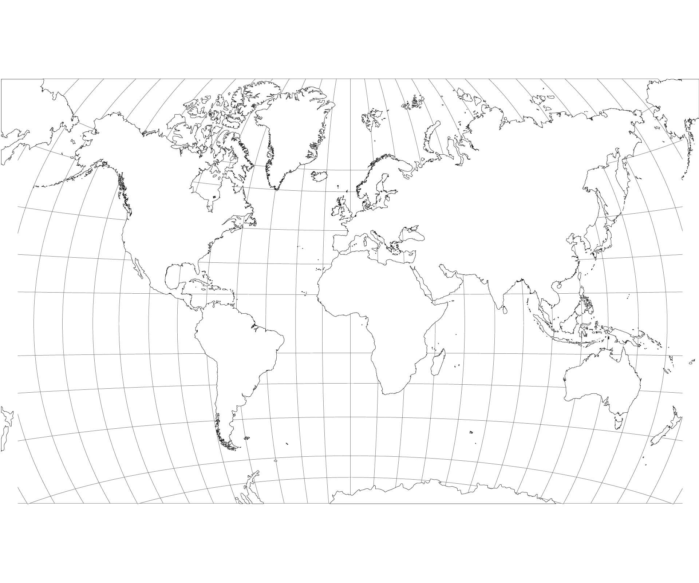
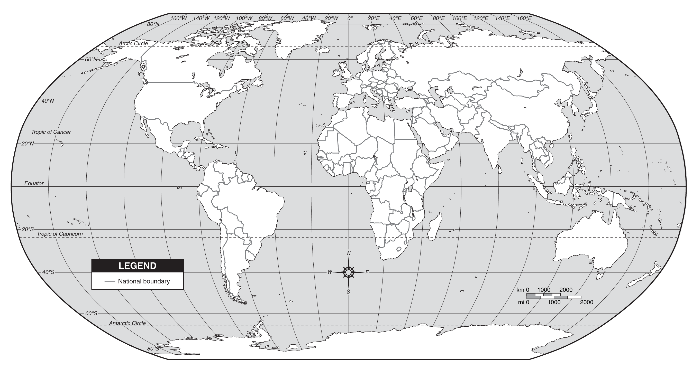

Карта Завоеваний
Нажмите на центры Халифата для изучения его истории
Мир Ислама и расцвет наук
Нажмите на центры Халифата для изучения его истории
Арабы ввели систему «арабских» цифр (заимствованных из Индии) и создали алгебру. Имена ученых, таких как аль-Хорезми, навсегда вошли в историю науки.
Мечети с тонкими минаретами, узорчатые арабески и величественные дворцы (Альгамбра) стали вершиной восточного зодчества, сочетая роскошь и математическую точность.
Ибн Сина (Авиценна) написал «Канон врачебной науки», который был главным учебником для врачей Европы и Востока на протяжении шести столетий.


 




